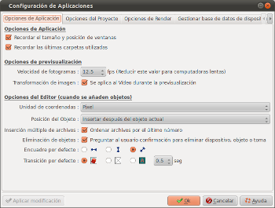
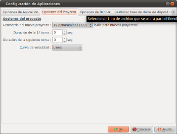
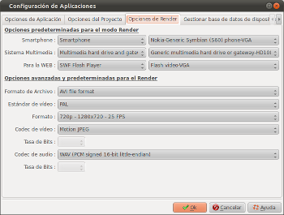
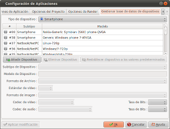

Introducción
El apartado para configurar el
programa permite definir las opciones para ffDiaporama. Esta
ventana de diálogo se abre con el icono  en la barra de
herramientas.
en la barra de
herramientas.
Consiste en 4 pestañas:
Opciones del programa

Opciones de Aplicación
| Recordar
tamaño y posiciones de ventanas |
- Si esta casilla está marcada, los tamaños
y las posiciones de todas las ventanas y el cuadro de
diálogo de ffDiaporama se guardará para ser
reutilizado la próxima vez que vaya a trabajar
con ffDiaporama..
|
| Recordar
las últimas carpetas utilizadas |
- Si esta casilla está marcada, los directorios
que se usarán para las imágenes, los videos,
los proyectos, las músicas y las generaciones de
la película se guardarán para ser
reutilizados la próxima vez que vaya a trabajar
con ffDiaporama.
|
Activar "raster" Graphics
System (Necesitas reiniciar la aplicación)
|
Sólo
para usuarios de Linux:
- Si esta casilla está marcada, el sistema de
gráficos "raster" será usado en vez del que
trae por defecto el Sistema (modo nativo).
Esta opción será utilizado sólo al
inicio.
El sistema "raster" acelera los
gráficos, pero puede causar problemas en algunas
computadoras, particularmente entornos KDE.
|
Opciones de previsualización
Velocidad
de fotogramas
|
- Definir número de imágenes por segundo que
será generado para mostrar en la
previsualización.
Nota: cuanto mayor sea este
número, más suave será la
previsualización. Por otro lado, gastará
más recursos del equipo.
Reducir este número en
computadoras lentas o si el indicador de su lector
multimedia está frecuentemente en la zona roja. |
| Transformación
de imagen (Se aplica al Vídeo durante la
previsualización) |
- Si esta casilla está marcada, the effects of
transformations will be applied to the images of
videos during the preview.
Nota: ciertos efectos se toman un
largo tiempo de calculo y puede causar una
previsualización lenta.
En estos casos, no selecciona esta
casilla permite una vista previa más suave |
Opciones del Editor
Unidad de coordenadas
|
Esta
opción permite seleccionar la unidad de las
coordenadas que se utilizarán en el diálogo de
propiedades. Se puede elegir:
- Porcentaje: Las coordenadas (X, Y, Anchura y Altura)
se expresarán en porcentajes.
- Pixel: Las coordenadas (X, Y, Anchura y Altura) se
expresarán en pixels en relación a la
pantalla en modo 1080p.
|
Posición
del Objeto
|
Esta
opción permite ajustar las posiciones ocupadas por
los nuevos objetos insertados en la línea de tiempo.
- Si la característica marcada es Insertar
después del objeto actual, entonces, las
diapositivas se crearán después de la
diapositiva actual.
- Si la característica marcada es Añadir
al final del proyecto, entonces las nuevas
diapositivas se crearán al final del proyecto.
|
Inserción
mútiple de archivos
|
Esta
opción permite ajustar la forma en que se
ordenarán los archivos al hacer una selección
múltiple pulsando en Añadir
Archivos.
- Si esta casilla está marcada, los archivos
serán añadidos según el sufijo
numérico :
Ejemplo: Si has seleccionado IMG_0025, IMG_0032,
MVI_0029 y MVI_0040,
los archivos quedarán insertados aí : IMG_0025,
MVI_0029, IMG_0032 y MVI_0040
- Si esta casilla no está marcada, los archivos
no se añadirán por orden alfabético.
|
Eliminación de objetos
|
Si
esta casilla está marcada, un mensaje de
confirmación se mostrará cada vez que se quiera
eliminar un objeto:
- Una diapositiva de la ventana principal
- Una toma o bloque en el diálogo de la ventana
de propiedades
|
Encuadre
por defecto
|
Se
define la forma en que quedará el encuadre
después de la inserción:
 Los archivos se encuadrarán de forma que se
mostrará la anchura total de la imagen
Los archivos se encuadrarán de forma que se
mostrará la anchura total de la imagen
 Los archivos se encuadrarán de forma que se
mostrará la altura total de la imagen
Los archivos se encuadrarán de forma que se
mostrará la altura total de la imagen Los archivos se encuadrarán según la forma
más óptima
Los archivos se encuadrarán según la forma
más óptima
|
Tansición
por defecto
|
Define
qué tipo de transición se usará entre las
diapositivas:
 Una transición elegida de forma aleatoria de la
biblioteca
Una transición elegida de forma aleatoria de la
biblioteca  Sin transición
Sin transición Una transición de fundido (Cross-fade)
Una transición de fundido (Cross-fade)
|
Opciones del Proyecto

|
Geometría
del nuevo proyecto
|
Selecciona
la geometría de la imagen que se utilizará para
la creación de proyectos.
Tres geometrís están
disponibles :
- 4/3 : Corresponde a los TV antiguos, pantalla
más cuadrada
- 16/9 : Corresponde a TV más modernos, con
pantallas rectangulares
- 2.35/1 : Corresponde al formato Cinema (en un TV,
con este formato, veremos bordes negros arriba y abajo
de la pantalla, enmarcando la imagen.)
Nota: la geometría de un
proyecto se configura definitívamente cuando lo
seleccionamos.
No es posible modificarlo
después. |
Duración
de la 1ª toma
|
Defines
the default duration of the first shot for slides during
their creation. |
Duración
de la siguiente toma
|
Define
el valor por defecto de la duración de las tomas
siguientes. |
Curva
de velocidad
|
Define
la curva de velocidad que se utilizará en
transiciones y animaciones:
- Lineal : La velocidad de las transiciones y la
animaciones es lineal (es decir, la velocidad es
constante).
- Cuarto de seno : La velocidad de transiciones y
animaciones sigue una curva cuarto de un seno (es
decir, las transiciones y animaciones comienzan
lentamente, aceleran, y después terminan
lentamente).
|
Opciones de Render

Opciones predeterminadas para el
modo Render
Smartphone
|
Seleccionar el tipo de
equipo que se propone de forma predeterminada cuando se
haga click en el botón "Player y Smartphone" el
menú "Render video"
|
Sistema
Multimedia
|
Seleccionar el tipo de
equipo que se propone de forma predeterminada cuando se
haga click en el botón "Sistema Multimedia" del
menú "Render video" |
Para la
WEB
|
Seleccionar el tipo de
equipo que se propone de forma predeterminada cuando se
haga click en el botón" Para la WEB" del menú
"Render vídeo" |
Opciones avanzadas y
predeterminadas para el Render
Formato
de Archivo
|
Seleccionar el formato de
archivo predeterminado para renderizar según lista
propuesta. |
Estándar
de vídeo
|
Seleccionar formato de
vídeo predeterminado, PAL o NTSC. |
Formato
|
Seleccionar el formato de
imagen predeterminado para renderizar según lista
propuesta. |
Codec de
vídeo
|
Seleccionar codec de
vídeo para el render según lista propuesta. |
Tasa de
bits
|
Seleccionar tasa de bits
para el vídeo durante el render según lista
propuesta. |
Codec de
audio
|
Seleccionar el codec de
audio para el render según lista propuesta. |
Tasa de
bits
|
Selecciona la tasa de bits
predeterminada para el audio durante el renderizado,
según lista propuesta. |
Gestionar base de datos de dispositivos

Esta pestaña permite modificar la base de datos con los
perfiles de equipos. La base de datos se compone en realidad de
dos partes:
- La base de datos predeterminada (suministrada con
ffDiaporama). Éstos dispositivos están registrados
en el archivo de configuración global de ffDiaporama.
- Los dispositivos que se modifican o añaden.
Éstos se encuentran registrados en el archivo de
configuración personal.
El area "tipo de dispositivo" permite seleccionar el tipo de
equipo que se mostrará en la lista.
La lista muestra las categorías y los tipos de dispositivos
presente en la base de datos.
 Dispositivos
precedidos por este icono se definen en la base de datos
predeterminada.
Dispositivos
precedidos por este icono se definen en la base de datos
predeterminada.  Dispositivos
precedidos por este icono son los que se han personalizado,
o los que se han modificado de la base de datos
predeterminada.
Dispositivos
precedidos por este icono son los que se han personalizado,
o los que se han modificado de la base de datos
predeterminada.
Los siguientes botones permiten actuar sobre la base de datos:

Añadir
dispositivo: Permite crear un nuevo dispositivo, que será
añadido a la base de datos.
La creación de un nuevo
dispositivo se crea en 3 pasos:
1- Tienes que crear un nuevo dispositivo
2- Debes definir varios parámetros
3- Debes hacer click en el botón "Aplicar
modificaciones" para registrar los cambios

Eliminar
Dispositivo: Permite eliminar un dispositivo.
Tenga en cuenta que sólo
podrá eliminar los dispositivos que ha creado - el
icono relacionado es

Restablecer datos:
Cancela las modificaciones que se han realizado en un
dispositivo definido por defecto en la base de datos de
ffDiaporama
Subtipo de Dispositivo: Permite seleccionar la categoría en
la que el equipo está clasificado
Modelo de Dispositivo : EScribir aquí el nombre del
dispositivo (texto personalizado)
Entonces, introducir todos los parámetros necesarios que se
asociarán al perfil del dispositivo, para así generar
los vídeos (Formato de archivo, video Estándar, etc.)
Consulta también
ffDiaporama 1.0